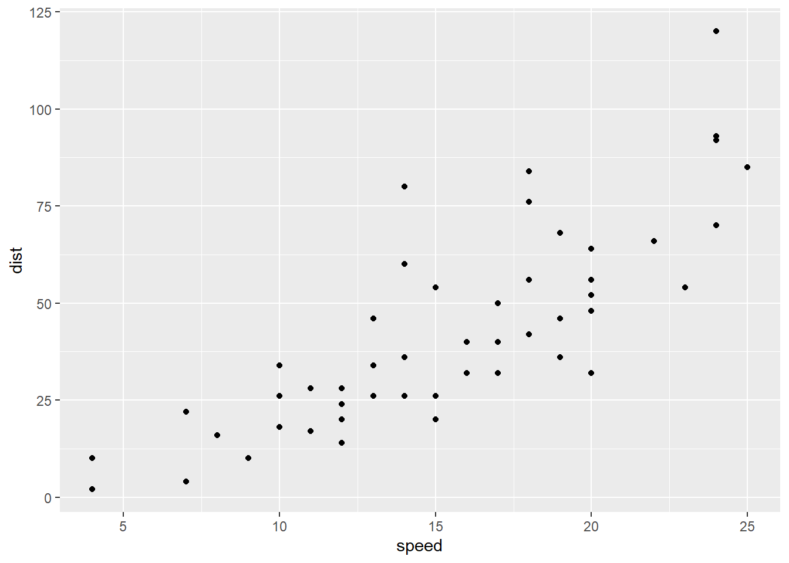
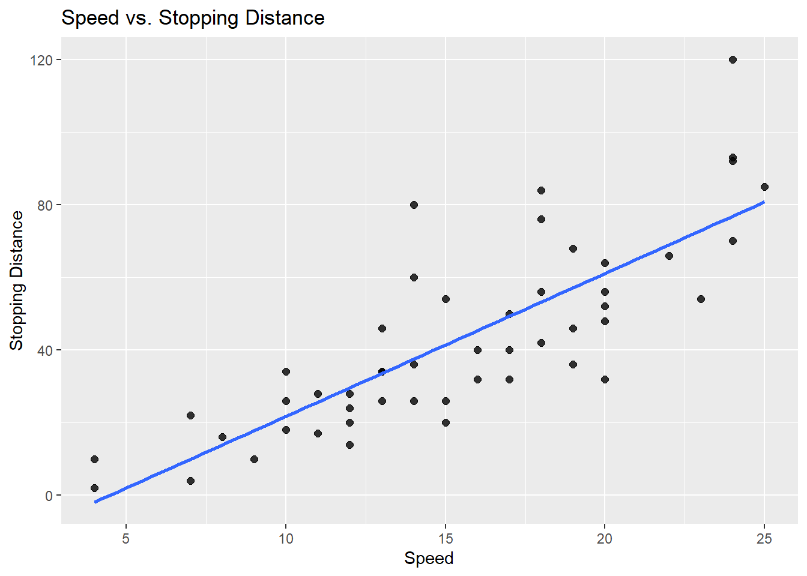
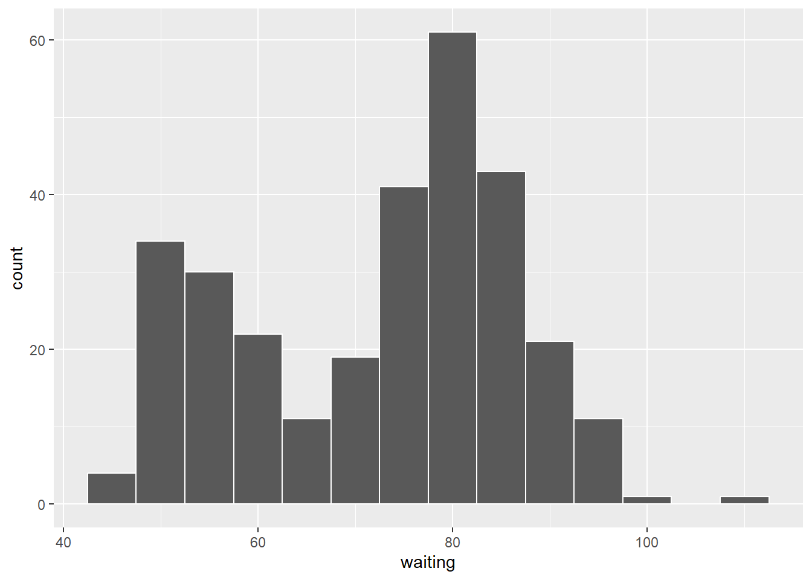
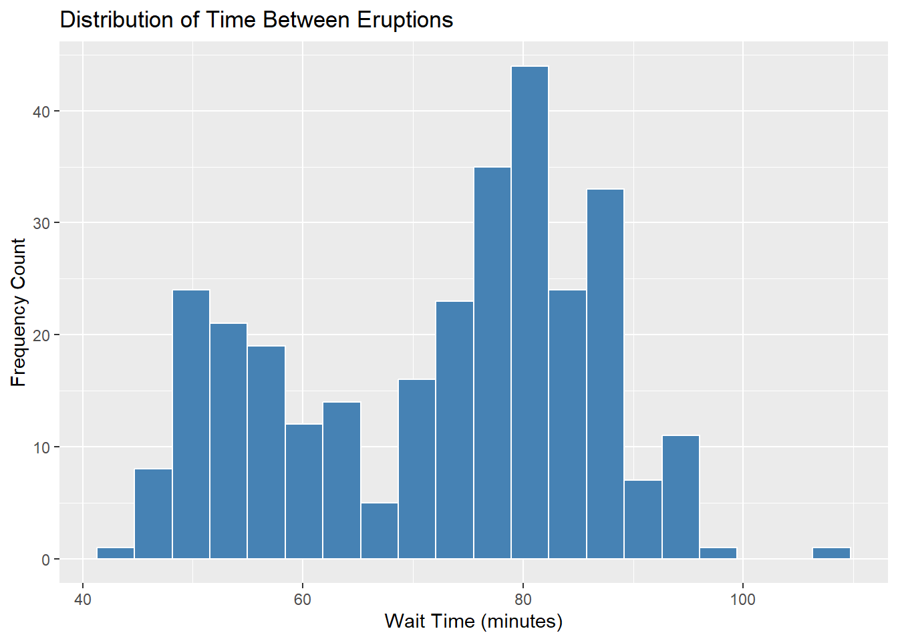
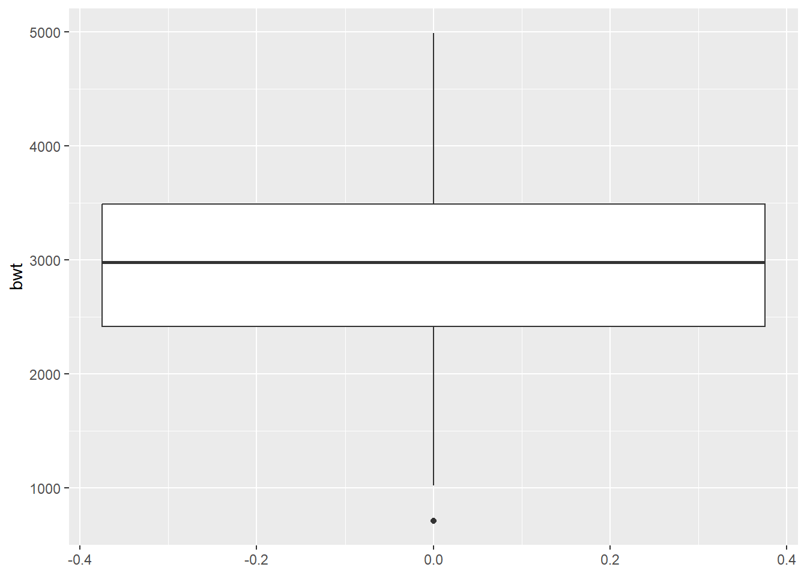
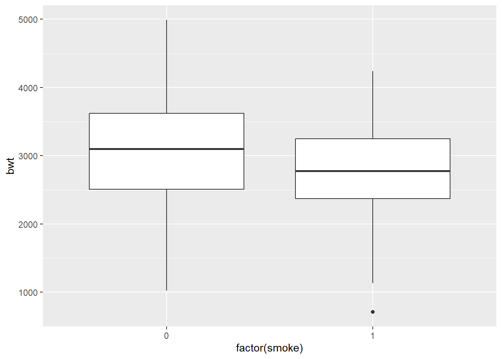
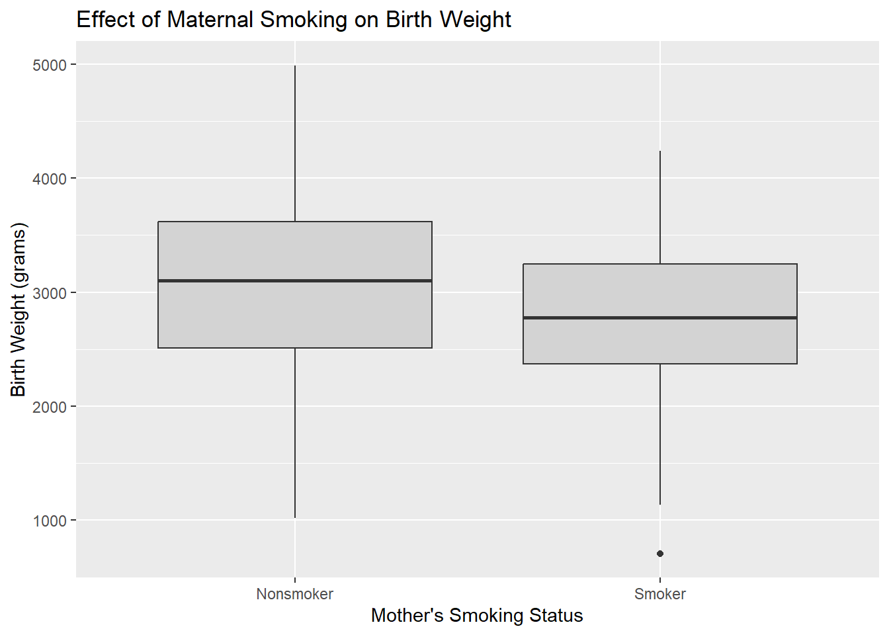

이전 R 튜토리얼에서는 R 환경에서 사용할 수 있는 다양한 라이브러리를 호출하고, readr::read_csv()를 활용하여 로컬 csv 파일을 작업 공간(Workspace)에 안전하게 로드하는 방법에 대해 알아보았습니다. 본 튜토리얼에서는 실제 데이터셋을 바탕으로 핵심적인 요약 수치를 계산하고, 데이터의 직관적 이해를 돕는 다양한 시각화 그래프를 생성하는 실습을 진행하겠습니다. 이 장에서는 베이스 R 함수로 원리를 먼저 익힌 뒤, 복잡한 그래프와 파이프라인 예제는 ggplot2와 dplyr을 포함한 Tidyverse 문법으로 작성하겠습니다.
library(MASS)library(Ecdat)
Attaching package: 'Ecdat'
The following object is masked from 'package:MASS':
SP500
The following object is masked from 'package:datasets':
Orange
── Conflicts ────────────────────────────────────────── tidyverse_conflicts() ──
✖ dplyr::filter() masks stats::filter()
✖ dplyr::lag() masks stats::lag()
✖ dplyr::select() masks MASS::select()
ℹ Use the conflicted package (<http://conflicted.r-lib.org/>) to force all conflicts to become errors
1 R에서의 도수분포표 및 분할표
범주형 변수를 다룰 때 탐색적 분석의 기본적인 형태는 단일 변수에 대한 도수분포표(Frequency table)와 두 변수의 교차를 보여주는 분할표(Contingency table)를 작성하는 것입니다. 이 표들로부터 표본 비율(Sample proportion)을 계산하는 과정은 매우 간단합니다. R에서는 내장된 table() 함수 하나로 이 두 가지 유형의 표를 모두 신속하게 생성할 수 있습니다. 먼저 도수분포표를 생성하기 위한 코드는 다음과 같습니다.
table(variable)
위 코드를 입력한 후 Enter 키를 누르십시오. 여기서 variable은 메모리에 입력된 벡터(Vector)의 이름이거나, $ 기호를 사용하여 더 큰 데이터 프레임(Data frame)에서 특정 열을 선택한 결과일 수 있습니다. R은 지정된 변수의 도수분포표를 즉시 반환합니다.
MASS 라이브러리에 포함된 quine 데이터셋을 살펴보겠습니다. 이 데이터는 호주 학생들의 결석 일수에 대한 조사 결과로, 각 학생의 인종(원주민 또는 비원주민), 성별(남성 또는 여성), 학습 능력(평균 학습자 또는 느린 학습자) 등의 인구통계학적 데이터가 포함되어 있습니다. 설문에서 응답한 인종별 학생 분포를 파악하고 싶다면(quine 데이터 프레임의 Eth 변수), 아래 코드를 실행하여 원주민 학생이 69명, 비원주민 학생이 77명임을 즉시 확인할 수 있습니다.
table(quine$Eth)
A N
69 77
분할표의 경우, 함수 내부에 변수가 하나가 아니라 두 개가 들어간다는 점을 제외하면 코드는 거의 동일합니다.
table(variable1, variable2)
마찬가지로 이 변수들은 단일 벡터이거나 데이터 프레임에서 추출된 변수입니다. 동일한 quine 데이터셋을 활용하여 학생의 인종(Eth 변수)과 학습 능력(Lrn 변수)이 교차하는 분할표를 생성해 보겠습니다. 코드는 다음과 같습니다.
table(quine$Eth, quine$Lrn)
AL SL
A 40 29
N 43 34
이 코드를 실행하면 아래와 같은 2차원 분할표를 얻을 수 있습니다.
평균 학습자
느린 학습자
원주민
40
29
비원주민
43
34
다만 베이스 R의 table() 함수는 행이나 열의 주변 합계(Marginal total) 또는 표의 전체 합계를 기본적으로 제공하지 않는다는 점에 유의해 주십시오. 이러한 총계 값들은 필요에 따라 addmargins()와 같은 R의 추가 함수를 덧씌워 계산할 수 있습니다.
2 R에서의 수치적 탐색 분석
이 섹션에서는 R에서 양적 변수(수치형 변수)의 요약 수치를 계산하는 방법론을 살펴보겠습니다. 단일 양적 변수의 데이터가 뭉쳐 있는 중심(Center)과 흩어진 정도인 산포(Spread)를 측정하는 수치, 그리고 두 양적 변수 간의 통계적 상관관계(Correlation)를 도출하는 것에 집중하겠습니다.
2.1 변수의 중심 경향 요약
먼저, 이론 장에서 학습한 변수의 중심을 나타내는 두 가지 대표적인 요약 수치인 표본 평균(Sample mean)과 표본 중앙값(Sample median)을 상기해 보겠습니다. R에서는 벡터에 저장된 숫자들에 대해 이 수치들을 눈 깜짝할 사이에 계산합니다. 평균을 계산하는 코드는 다음과 같습니다.
mean(variable, na.rm =TRUE)
중앙값을 계산하는 코드는 다음과 같습니다.
median(variable, na.rm =TRUE)
두 경우 모두 인자로 주어지는 변수는 직접 생성한 벡터이거나 데이터 프레임의 특정 열입니다. 예를 들어, Ecdat 라이브러리의 Housing 데이터셋을 살펴보겠습니다. 이 데이터셋은 캐나다 윈저(Windsor)시의 주택 물리적 특성과 실제 판매 가격을 상세히 다루고 있습니다. 주택 판매 가격(price 변수)의 산술 평균을 구하고 싶다면 다음 코드를 실행해 주십시오.
mean(Housing$price, na.rm =TRUE)
[1] 68121.6
중앙값의 경우는 다음과 같습니다.
median(Housing$price, na.rm =TRUE)
[1] 62000
실행 결과, 이 지역 주택의 평균 판매 가격은 68,121.6달러이고 중앙값은 62,000달러임을 알 수 있습니다. 또한 mean() 및 median() 함수를 강력한 벡터 서브세팅(Subsetting) 기술과 결합하여 여러 하위 그룹의 통계량을 직접 비교할 수도 있습니다. 예를 들어, 선호 지역(prefarea 변수, “yes” 또는 “no”)에 따른 주택의 평균 판매 가격 차이를 확인하고 싶다면 다음과 같이 논리문을 삽입해 주십시오.
결과를 통해 선호 지역에 위치한 주택의 평균 판매 가격은 83,986.37달러로, 비선호 지역의 63,263.49달러에 비해 월등히 높음을 확증할 수 있습니다.
2.2 변수의 산포 요약
변수의 산포(퍼짐)를 살펴볼 때 우리는 범위(Range), 분산(Variance), 표준편차(Standard deviation), 사분위수 범위(Interquartile range, IQR)라는 네 가지 핵심 요약 수치에 집중했습니다. R에서는 이 수치들을 단 한 줄의 코드로 계산해 냅니다. 범위와 사분위수 범위부터 시작하겠습니다. 복습하자면, 범위는 최댓값에서 최솟값을 뺀 값이고, 사분위수 범위는 제3사분위수(Q3)에서 제1사분위수(Q1)를 뺀 값입니다. 이 네 가지 경계값에 중앙값을 더하면 변수의 완벽한 다섯 수치 요약(Five-number summary)이 완성됩니다. R에서 summary() 함수를 호출하면 이 값들을 한 번에 얻을 수 있습니다.
summary(Variable)
이 코드는 변수의 최솟값, 제1사분위수, 중앙값, 제3사분위수, 최댓값에 더해 산술 평균까지 친절하게 제공합니다. 이를 통해 연구자는 범위와 IQR을 손쉽게 도출할 수 있습니다. 혹은 명시적인 함수를 사용할 수도 있습니다. IQR()은 사분위수 범위를 곧바로 반환하지만, range()는 범위 값이 아니라 최솟값과 최댓값의 쌍을 반환한다는 점에 유의하십시오. 범위 자체가 필요하다면 diff(range(x))로 계산합니다.
summary() 함수의 반환값에는 분산이나 표준편차가 포함되어 있지 않지만, 역시 전용 함수를 통해 즉각 계산할 수 있습니다. 분산은 var() 함수를 사용합니다.
var(variable, na.rm =TRUE)
표준편차는 sd() 함수를 사용하여 다음과 같이 구합니다.
sd(variable, na.rm =TRUE)
이러한 수치 요약 옵션들을 종합적으로 설명하기 위해 MASS 라이브러리의 Pima.te 데이터셋을 분석해 보겠습니다. 이 데이터는 당뇨병 발병 예측 연구에서 고전적인 벤치마크로 쓰이는 피마(Pima) 인디언 부족 여성들의 생체 지표를 담고 있습니다. 혈장 포도당 수치(glu 변수)의 특성을 파악하기 위해, 먼저 다음 코드를 사용하여 다섯 수치 요약을 출력해 주십시오.
summary(Pima.te$glu)
Min. 1st Qu. Median Mean 3rd Qu. Max.
65.0 96.0 112.0 119.3 136.2 197.0
이 변수의 다섯 수치 요약은 콘솔에 다음과 같이 나타납니다.
최솟값
Q1
중앙값
Q3
최댓값
65
96
112
136.2
197
이를 바탕으로 우리는 범위가 \(197-65=132\)이고 IQR이 \(136.2-96=40.2\)임을 계산할 수 있습니다.
분산을 구하려면 콘솔에 다음과 같이 입력하십시오.
var(Pima.te$glu)
[1] 930.3194
그 결과 표본 분산 \(s^2=930.32\)임을 확인할 수 있고, 표준편차를 구하려면 다음을 실행합니다.
sd(Pima.te$glu)
[1] 30.50114
결과로 표준편차 \(s=30.5\)를 얻습니다. 수학적 정의에 따라 \(s\)는 반드시 \(s^2\)의 양의 제곱근이 된다는 점을 명심해 주십시오.
2.3 두 양적 변수 간의 연관성 요약
두 양적 변수 간의 선형적 연관성(Association)을 단일 수치로 압축하여 나타내는 것이 피어슨 상관계수(Correlation)입니다. 수작업으로 Z-점수 곱의 평균을 계산하는 것은 무수한 오류를 유발하므로, R에서는 cor() 함수를 사용하여 즉각적이고 정확하게 상관계수를 도출합니다.
cor(Variable1, Variable2)
R 기본 환경에 내장된 cars 데이터셋을 살펴보겠습니다. 이 데이터는 1920년대 구형 자동차들의 주행 속도와 그에 따른 제동 거리를 기록하고 있습니다. 속도(speed)와 제동 거리(dist) 사이의 상관계수를 계산하려면 다음과 같이 작성해 주십시오.
cor(cars$speed, cars$dist)
[1] 0.8068949
계산 결과 \(r=0.8069\)를 얻을 수 있으며, 이는 속도와 제동 거리 사이에 매우 강한 양(+)의 선형 관계가 존재함을 시사합니다. 인자로 전달되는 두 변수의 순서가 바뀌어도 상관계수는 수학적 대칭성에 의해 동일하게 유지된다는 점에 유의해 주십시오. 또한, 이 상관계수는 두 변수 사이의 관계가 진정 ’선형’일 때만 유효하게 해석될 수 있습니다. 선형성 여부는 반드시 산점도를 통해 시각적으로 교차 검증해야 합니다.
3 결측 데이터
실제 데이터에서는 측정 장비의 오류나 응답 누락으로 인해 텅 빈 값, 즉 결측 데이터(Missing data)가 빈번하게 발생합니다. R에서 이러한 값들은 NA(Not Available)로 표기되며, 결측값이 단 하나라도 섞인 벡터에 대해 평균이나 중앙값을 계산하면 R은 엄격한 논리에 따라 NA를 반환합니다.
수작업 계산 시에는 인간이 알아서 빈칸을 무시하고 계산하겠지만, 컴퓨터 프로그래밍에서는 결측값을 계산 과정에서 제외하라는 명시적인 지시를 내려야 합니다. R의 대다수 통계 함수는 na.rm (NA remove) 옵션을 지원합니다. 이를 TRUE로 설정하면 R은 내부적으로 결측값을 안전하게 걸러낸 뒤 통계량을 계산합니다.
mean(variable, na.rm =TRUE)
이 규칙은 median(), var(), sd() 등 거의 모든 단일 변수 요약 함수에 공통으로 적용됩니다. 그러나 cor() 함수의 경우는 두 개의 변수가 한 쌍으로 움직이므로 처리 방식이 약간 다릅니다. 쌍을 이루는 두 값 중 하나라도 결측치라면 그 관측치(행) 전체를 분석에서 제외하는 완전 관측치(Complete observation) 제거 방식을 취해야 합니다. 이 경우 cor() 함수에는 use = "complete.obs" 인자를 명시해 주십시오.
cor(variable1, variable2, use ="complete.obs")
데이터에 애초에 결측값이 존재하지 않는다면 이 옵션들을 추가해도 연산 결과나 성능에 아무런 악영향을 미치지 않으므로, 방어적 프로그래밍 차원에서 습관적으로 포함하는 것이 좋은 실무 습관입니다.
3.1 연습 문제
MASS 라이브러리에서 급성 백혈병 환자 데이터인 leuk 데이터셋을 로드해 주십시오. 생존 시간(time), 백혈구 수(wbc), 백혈구의 형태학적 특성 존재 여부(ag)를 포함하고 있습니다.
형태학적 특성 존재 여부(ag)에 대한 도수분포표를 생성해 보십시오.
생존 시간(time)에 대한 중앙값과 평균을 정확히 계산해 보십시오.
백혈구 수(wbc)에 대한 범위, IQR, 분산, 표준편차를 차례대로 도출해 보십시오.
백혈구 수와 생존 시간 사이의 피어슨 상관관계를 도출해 보십시오.
MASS 라이브러리에서 survey 데이터셋을 로드해 주십시오. 대학생들의 생활 습관 설문 응답을 담고 있습니다.
학생의 흡연 여부(Smoke)와 운동 요법 빈도(Exer)가 만나는 분할표를 생성해 보십시오.
학생의 심박수(Pulse)의 평균과 중앙값을 계산해 주십시오. (결측치 처리에 유의하십시오.)
학생 연령(Age)의 범위, IQR, 분산, 표준편차를 구해 보십시오.
주로 쓰는 손의 너비(Wr.Hnd)와 반대쪽 손의 너비(NW.Hnd) 사이의 상관계수를 계산해 주십시오.
Ecdat 라이브러리의 Housing 데이터셋을 사용하여 다음을 수행하십시오.
오락실(recroom) 보유 여부와 전체 지하실(fullbase) 보유 여부의 교차 분할표를 생성해 주십시오.
대지 크기(lotsize)의 평균과 중앙값을 도출해 보십시오.
판매 가격(price)의 범위, IQR, 분산, 표준편차를 계산해 주십시오.
판매 가격(price)과 침실 수(bedrooms)의 상관계수를 파악해 보십시오.
4 R에서의 시각적 탐색 분석
숫자로 된 요약 통계량의 한계를 보완하고 데이터의 전체적인 윤곽을 파악하기 위해 통계학자들은 시각화를 최우선으로 수행합니다. 앞서 다룬 산점도, 상자 그림, 히스토그램은 탐색적 분석의 강력한 삼총사입니다. 실무에서는 문법적 일관성이 뛰어난 ggplot2 패키지를 데이터 시각화의 표준으로 사용합니다.
4.1 산점도
산점도는 두 양적 변수 사이의 관계, 특히 상관계수 계산의 전제 조건인 선형성의 유무를 육안으로 검증하는 핵심 도구입니다. ggplot2를 사용하여 산점도를 구축하는 뼈대 코드는 다음과 같습니다.
ggplot(data, aes(x = x_variable, y = y_variable)) +geom_point()
cars 데이터셋의 속도(speed)와 제동 거리(dist) 관계를 ggplot2로 구현해 보겠습니다. 코드는 다음과 같이 작성됩니다.
cars |>ggplot(aes(x = speed, y = dist)) +geom_point()

이 코드는 기본적인 산점도를 렌더링합니다. 하지만 실제 보고서나 프레젠테이션에 사용하기에는 다소 투박하므로, ggplot2의 강력한 레이어(Layer) 시스템을 활용하여 도표를 전문가 수준으로 다듬어 보겠습니다.
labs(x = ..., y = ..., title = ...): X축, Y축 라벨과 전체 제목을 명시적으로 부여합니다.
geom_point(shape = ...): 점의 기하학적 모양을 변경합니다. (기본값 16번 외에 1~25번까지의 고유 형상이 존재합니다.)
color: 데이터 포인트의 테두리나 내부 색상을 지정합니다.
size, alpha: 점의 절대적 크기와 투명도를 조절합니다. 딥러닝 모델의 출력처럼 수십만 개의 데이터 포인트가 몰려 있을 때 alpha를 낮추면 밀도(Density)를 시각적으로 파악하기 매우 용이해집니다.
coord_cartesian(xlim = ..., ylim = ...): 데이터 자체를 삭제하지 않고 오직 뷰포트(화면)에 표시되는 축의 줌(Zoom) 범위만을 안전하게 제어합니다.
아울러 추세선을 추가하는 geom_smooth(method = "lm") 레이어를 덧대어 완성한 고품질 산점도 코드는 다음과 같습니다. 시각적으로 보았을 때 두 변수는 뚜렷한 선형 관계를 따름을 확신할 수 있습니다.
cars |>ggplot(aes(x = speed, y = dist)) +geom_point(size =2, alpha =0.8) +geom_smooth(method ="lm", se =FALSE) +labs(x ="Speed",y ="Stopping Distance",title ="Speed vs. Stopping Distance" )
`geom_smooth()` using formula = 'y ~ x'

4.2 히스토그램
단일 수치형 변수의 전반적인 분포 형태(Shape)와 이상치를 검토하기 위해서는 히스토그램이 제격입니다. ggplot2에서 히스토그램을 그리는 뼈대 코드는 다음과 같습니다.
ggplot(data, aes(x = variable)) +geom_histogram()
MASS 패키지의 geyser 데이터셋(미국 옐로스톤 국립공원 올드 페이스풀 간헐천의 분출 기록)을 활용하여 분출 대기 시간(waiting) 히스토그램을 생성해 보겠습니다.
geyser |>ggplot(aes(x = waiting)) +geom_histogram(binwidth =5, color ="white")

출력된 히스토그램을 관찰하면, 대기 시간은 봉우리가 확연히 두 개인 쌍봉(Bimodal) 분포를 띠며 각각 약 50분과 80분 근처에 집중되어 있음을 알 수 있습니다. 히스토그램 역시 풍부한 옵션으로 튜닝이 가능합니다.
bins 또는 binwidth: 막대의 총개수를 직접 지정하거나, 막대 하나의 물리적 너비를 지정합니다. (둘 중 하나만 사용하십시오.)
geyser |>ggplot(aes(x = waiting)) +geom_histogram(bins =20, fill ="steelblue", color ="white") +labs(x ="Wait Time (minutes)",y ="Frequency Count",title ="Distribution of Time Between Eruptions" )

5 상자 그림
상자 그림(Boxplot)은 단일 수치형 변수의 이상치를 족집게처럼 찾아내거나, 범주형 예측 변수(X)의 그룹별로 양적 반응 변수(Y)의 분포 차이를 나란히 비교할 때 특히 유용합니다. 단일 변수에 대한 기본 코드는 축 방향만 바꾸어 다음과 같이 작성합니다.
ggplot(data, aes(y = variable)) +geom_boxplot()
MASS 패키지의 birthwt 데이터셋을 사용하여 신생아의 출생 체중(bwt) 상자 그림을 단독으로 그려보겠습니다.
birthwt |>ggplot(aes(y = bwt)) +geom_boxplot()

상자 그림의 레이어 또한 미적으로 완벽하게 통제할 수 있습니다.
outlier.shape: 이상치를 표시하는 점의 모양을 특별히 지정하여 강조할 수 있습니다.
그룹 간 비교를 위해 X축에 범주형 변수를 투입하는 확장 코드는 다음과 같습니다. 산부인과 연구에서 어머니의 흡연 여부(smoke)가 출생 체중에 미치는 타격을 시각적으로 증명해 보겠습니다.
birthwt |>ggplot(aes(x =factor(smoke), y = bwt)) +geom_boxplot()

다만 smoke 변수는 0과 1이라는 숫자로 입력되어 있어 라벨이 불친절합니다. 최신 파이프라인 기법에서는 ggplot()을 호출하기 직전에 mutate() 함수로 데이터를 전처리하여 의미 있는 팩터(Factor)로 둔갑시키는 것이 원칙입니다. 이렇게 하면 그래프의 가독성이 비약적으로 상승합니다.
birthwt |>mutate(smoke_status =factor(smoke, labels =c("Nonsmoker", "Smoker"))) |>ggplot(aes(x = smoke_status, y = bwt)) +geom_boxplot(outlier.shape =16, fill ="lightgray") +labs(x ="Mother's Smoking Status",y ="Birth Weight (grams)",title ="Effect of Maternal Smoking on Birth Weight" )

5.1 연습 문제
Ecdat 라이브러리의 Star 데이터셋을 활용하여 다음 과제를 수행해 주십시오. 학급 규모가 학업 성취도에 미치는 영향을 추적한 귀중한 데이터입니다.
학생의 수학 점수(tmathssk)를 X축에, 독해 점수(treadssk)를 Y축에 배치한 산점도를 생성하고 적절히 꾸며 보십시오.
교직 경력 년수(totexpk) 분포를 한눈에 볼 수 있는 히스토그램을 생성해 보십시오.
mutate() 함수를 활용하여 Star 데이터셋 내에 수학 점수와 독해 점수를 합산한 totalscore라는 새로운 파생 변수를 창출해 보십시오.
학급 규모 유형(classk)을 그룹으로 하여 방금 만든 총점(totalscore)의 상자 그림을 나란히 그려 보십시오.
MASS 라이브러리의 survey 데이터셋에 대한 시각화 과제입니다.
학생의 키(Height)와 손 너비(Wr.Hnd) 간의 선형성을 확인하는 산점도를 그려 보십시오.
연령(Age)의 극단치를 확인하기 위한 히스토그램을 작성해 주십시오.
운동 요법의 강도(Exer)를 X축으로 하여 심박수(Pulse)의 차이를 보여주는 비교 상자 그림을 생성해 주십시오.
6 tidyverse로 EDA 파이프라인 구성하기
이전 챕터에서 다룬 베이스 R의 기본 함수들은 R의 내부 생리를 이해하는 데는 필수적입니다. 그러나 실제 데이터 과학 및 AI 전처리 실무 현장에서는, 데이터의 로딩부터 변형(전처리), 요약 통계량 도출, 그리고 최종 시각화까지 물 흐르듯 이어지는 tidyverse 파이프라인(|>) 문법을 구사하는 것이 절대적 표준입니다. 파이프라인을 사용하면 코드가 인간이 글을 읽는 사고의 흐름과 완벽히 일치하게 됩니다.
예를 들어, 앞서 살펴보았던 quine 데이터셋의 인종 및 학습 수준 분할표를 파이프라인으로 재구성하면 다음과 같은 직관적인 코드가 탄생합니다.
library(tidyverse)library(MASS)quine |>count(Eth, Lrn) |>group_by(Eth) |>mutate(prop_within_eth = n /sum(n)) |>ungroup()
# A tibble: 4 × 4
Eth Lrn n prop_within_eth
<fct> <fct> <int> <dbl>
1 A AL 40 0.580
2 A SL 29 0.420
3 N AL 43 0.558
4 N SL 34 0.442
수치형 변수의 다면적인 요약 역시 파이프라인의 summarise() 함수를 사용하면 매우 깔끔하게 정리됩니다. 최신 dplyr 1.1 버전부터는 임시 그룹화를 위해 별도의 group_by()를 사용할 필요 없이, .by 인자를 활용하여 코드를 더욱 경량화할 수 있습니다.
이렇게 구축된 파이프라인은 단순히 코드를 세련되게 치장하는 장식품이 아닙니다. 이 데이터가 어떠한 경로로 흘러들어와 결측치가 어떻게 안전하게 우회되었으며, 최종적으로 어떤 통계량으로 요약되었는지를 코드가 스스로 완벽하게 서술하게(Self-documenting) 만드는 현대 데이터 과학의 뼈대입니다. 이러한 명증한 기록은 훗날 코드의 재현성을 100% 보장하며, 복잡한 통계적 추론의 출발점을 튼튼하게 다져줄 것입니다.